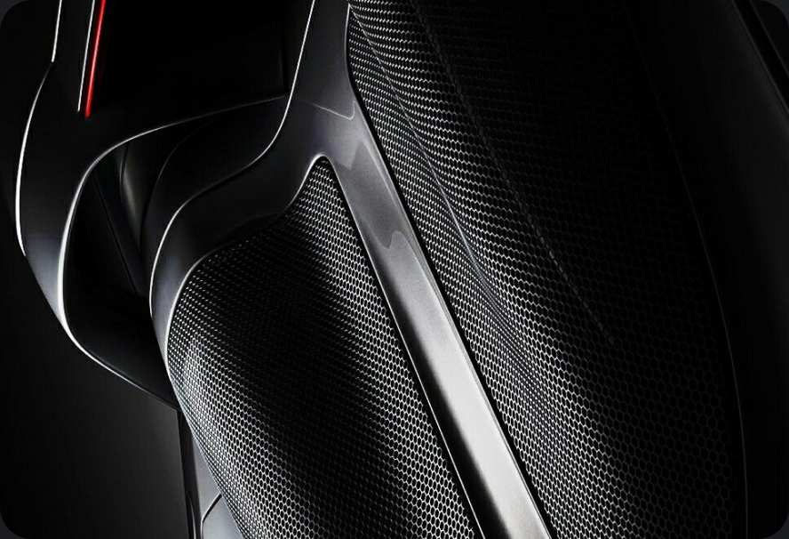
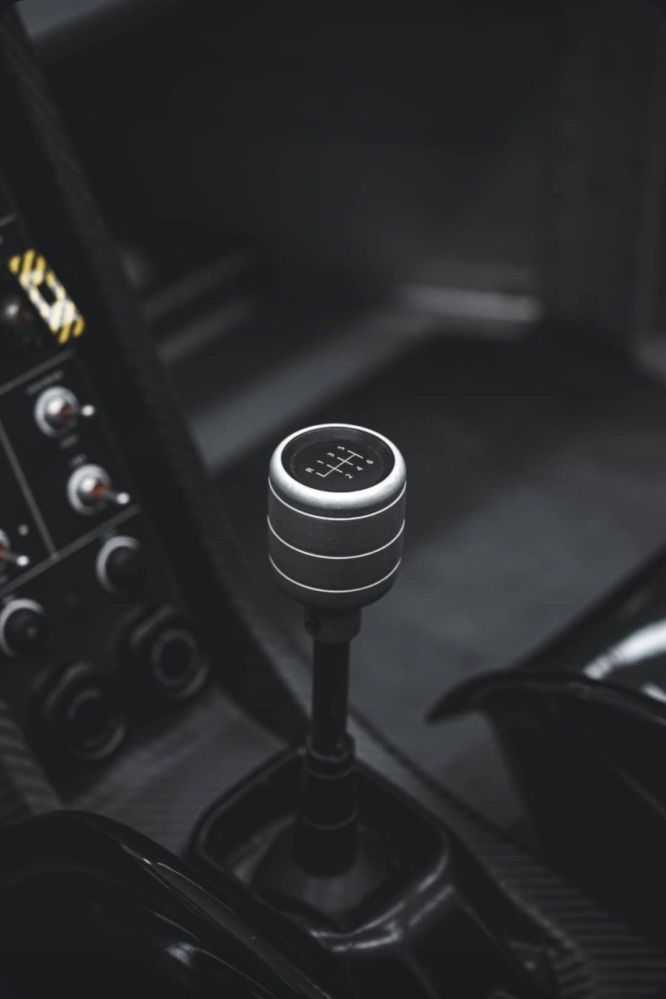
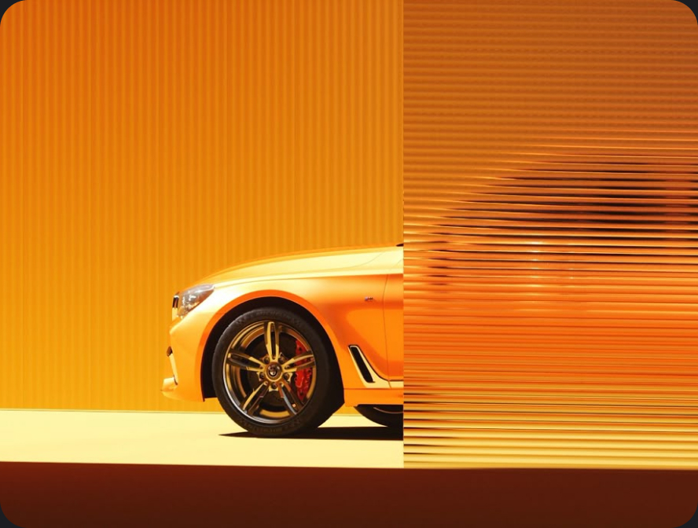
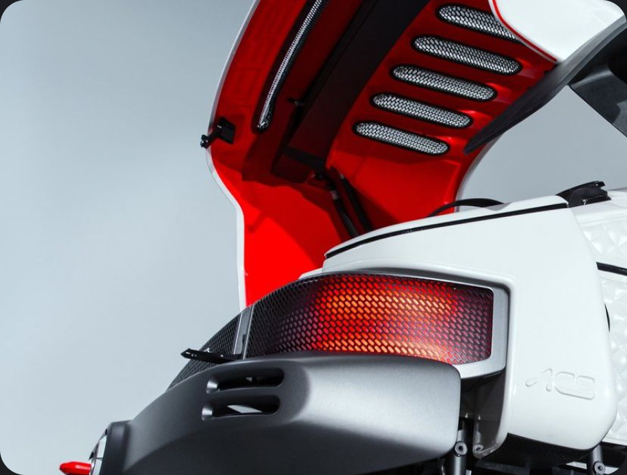

CORVACHE™
Corvache is a precision-driven performance automotive brand built around control, responsiveness, and design purity. Every element is engineered to create a deeply connected driving experience—where power is delivered with intention, and every input is met with clarity and confidence.
Corvache is built for drivers who value feel over flash—those who recognize that true performance isn't louder, it's sharper, more controlled, and more deliberate.
The brand favors restraint over excess. Rather than chasing attention through noise or spectacle, Corvache focuses on refined execution, balanced performance, and purposeful design decisions that reveal themselves over time.
- Edition
- 2026.1
- Maintained by
- Omnicom Precision Marketing
- Sections
- Seven
- Status
- Live
Logo
The Corvache logo represents precision, control, and design restraint. Its form is clean and intentional, designed to feel confident without excess. It should always appear clear, balanced, and uncompromised—never altered or embellished.
The logo is not a decorative element. It serves as a mark of authorship and should be used with discipline, allowing space and context to reinforce its presence.
Construction — verticals project the mark and the wordmark; horizontals its cap line and baseline. Clear space = x, half the mark’s height, held on all four sides.
Tone of Voice
Corvache communicates with clarity, restraint, and quiet confidence. The tone is composed and deliberate, favoring precision over personality and substance over style. Every word feels chosen, not added.
We do not try to impress—we assume the audience already understands.
Day–To–Day Interactions
Short, plain, finished. Lead with the answer and follow with the reason. No throat-clearing, no apology for the ask, and no exclamation mark doing work a clear sentence should already have done.
Shipping Thursday. Nothing outstanding on our side.
Stakeholder/Client Meetings
Take the position, then show the work. Confidence here is specificity — a number, a date, a name — never volume. Where something isn’t settled, say so once and say when it will be.
We tested it three ways. Two hold. The third we are still proving.
Social Media
The image carries it. The line names what is in frame and stops. No stacked hashtags, no rhetorical questions, no borrowed slang — at this distance, restraint is what reads as confidence.
Sixty seconds of silence, then the coast road.
Photography Style
Corvache photography is defined by control, realism, and restraint. Imagery should feel composed and intentional—never staged, never exaggerated. The vehicle is always grounded in real environments, captured with clarity and purpose.
Style Guides
Five controlled variations on the CORVACHE foundation above. Each one keeps its own guide, scoped to exactly how that variation departs from the standard—grade, grain, lens, light.
 01
Live
01
Live
 02
02
 03
03
 04
04
 05
05
Frames of record
Studio and detail photography, held to one standard: control, realism, restraint. Every highlight, reflection and shadow is intentional—and the details most people overlook are treated like the main event.

Detail / 03
Detail / 02
Studio / 06
Detail / 05Typography
Primary Typeface
Proxima Nova delivers clarity and control through clean, balanced forms. Modern, legible, and refined—without unnecessary character.
- Headlines
- Body Text & Descriptions
LlMmNnOoPpQqRrSsTt
UuVvWwXxYyZz
0123456789
Secondary Typeface
A monospaced typeface built for clarity and precision. Optimized for code, data, and structured content.
- Code Snippets
- Thinking Tasks
- Technical Descriptions & Statistics
LlMmNnOoPpQqRrSsTt
UuVvWwXxYyZz
0123456789
Color Philosophy
Color in Corvache is used with intention and restraint. It supports the product—it never competes with it. The palette is grounded, minimal, and controlled, allowing form, proportion, and material to lead.
Rather than relying on bold or expressive color, Corvache uses subtle contrast and tonal balance to create depth and focus. Color is a supporting element, not the source of attention.
Iconography
Corvache iconography is defined by clarity, precision, and restraint. Icons are designed to communicate function quickly and without distraction—supporting the interface and content rather than competing with it.
Every icon should feel consistent, balanced, and intentional, reflecting the same level of control found across the brand.
Graphic Elements
Reusable assets are the building blocks of Corvache expression—designed once, refined continuously, and deployed with consistency across every touchpoint.
This library exists to remove friction without sacrificing craft. Every file has been created to meet brand standards out of the box—color, composition, typography, and tone are already resolved. What remains is application, not reinvention.
Assets are modular by design. They are built to scale across formats, channels, and contexts—whether adapting a hero image for social, extending a layout for film, or localizing messaging across regions. Flexibility is intentional, but never at the expense of identity.
Spacing
Spacing is governed by a 4-point grid—everything snaps to a consistent, rhythmic system.
Radius
Corner radius follows a consistent scale—applied with restraint to maintain clarity, cohesion, and a refined edge.
Buttons
Every state—normal, hover, disabled—follows the same restrained visual language.
w/Icon Secondary Primary Pill
w/Icon Secondary Pill
Inputs
Input fields stay quiet by design—a single hairline border at rest, a soft focus state when active, and nothing louder than the content itself.
Tokens
Three tiers, one system. Primitives are raw values—palette, scale, timing—never referenced by a screen directly. Semantic names give a primitive a job: a background, an accent, a piece of body text.
Component tokens are the last mile—per-control decisions, resolved from semantic. Semantic is the column that maps to components, and the column a sub-brand overrides when it wants to feel different without touching a single component.
Templates
Approved starting points. Pick one, it opens in Canvas with this system already applied.